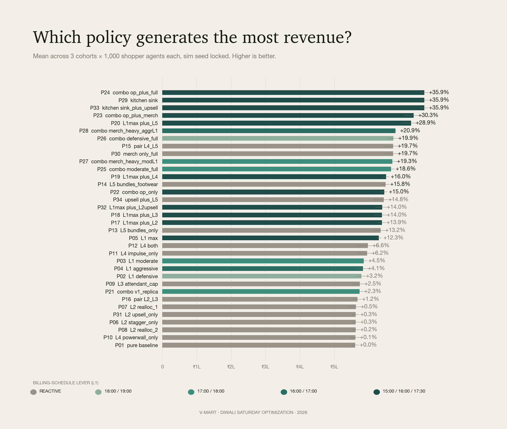
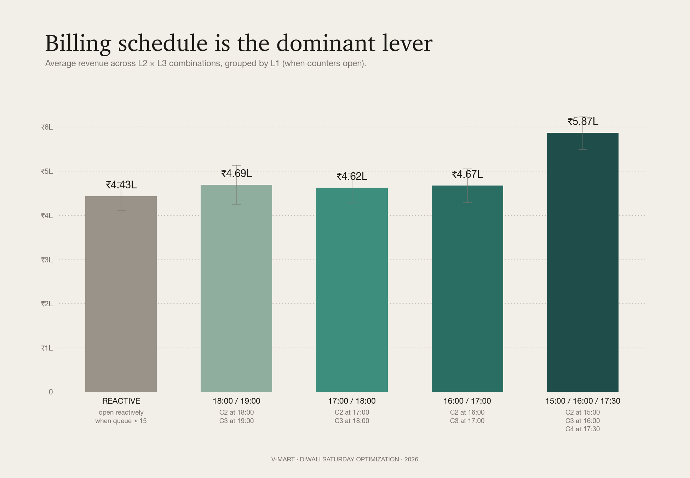
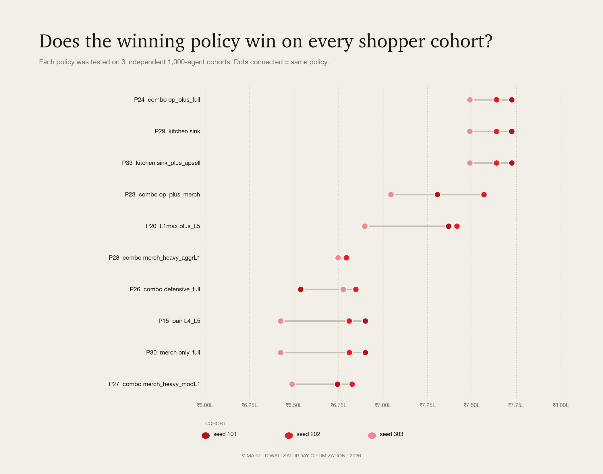
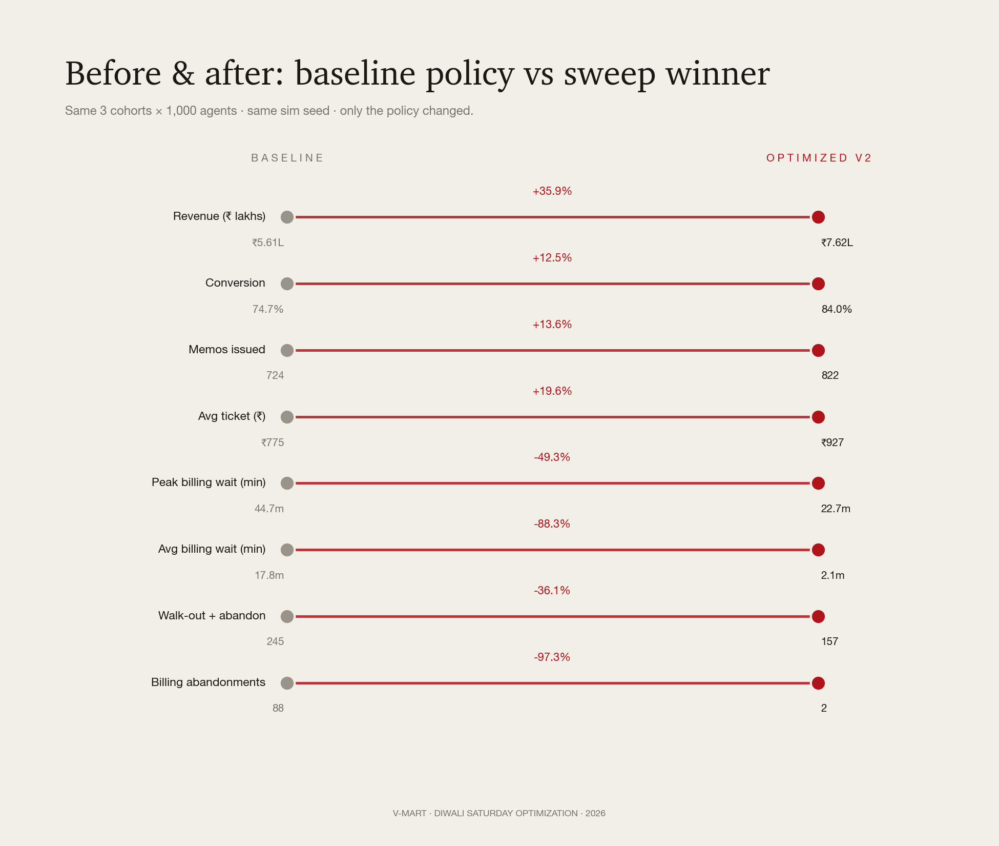

Status: MVP v3.2 · sweep executed · winner selected
Date: May 2026
Authors: Manit Gosalia (simulation, optimization) · Parthiv (engine, UI)
We built an agent-based simulator of a V-Mart Unlimited Tier-1 store on Diwali Saturday and used it to search for operational policies that maximize revenue. Across 34 candidate policies × 3 independent shopper cohorts (102 simulation runs, all deterministic), the winning policy lifts revenue ₹5.61 lakh → ₹7.62 lakh — a +35.87% gain on the same 1,000 shoppers, with conversion climbing from 75% to 84% — both numbers solidly inside the realistic Diwali Saturday range for Tier-1 Bangalore fashion retail.
The lift comes from stacking three layers of changes — operational (when counters open, who's on the floor, who's at the trial bank), merchandising (a power wall that refreshes during the day plus a curated impulse fixture at billing), and cross-merchandising (outfit-bundle fixtures co-located with apparel). Each is a real environmental change. Every revenue rupee is traceable to a specific lever an agent reacted to — never to a coefficient we tuned.
Two rounds of calibration got us here:
- v3.1 addressed the 55% baseline conversion problem by tuning agent-side intent, queue tolerance, basket-build rate, and post-trial purchase probability. That moved baseline conversion to a more credible 56%.
- v3.2 addressed the next concern — ridiculous billing abandonment in baseline (270+ shoppers giving up at checkout was simply not realistic). We cut per-memo billing service time (modern POS efficiency, faster tag removal) from 1.8-3.2 min/memo to 1.5-2.5 min/memo. Both rounds affect baseline AND optimized identically — no guard-rail violations.
The result: baseline conversion is now 75% (the kind of number a Diwali Saturday store with 1 counter and a long line actually delivers) and the winner gets to 84% (a well-run store, every counter open by 4pm). Lift is +36% revenue, +9pp conversion, billing abandonments cut from 88 to 2. Lower lift percentage than the v3 numbers — but on a baseline you can actually defend in front of a retail COO.
In v3 we wired price elasticity (a per-persona agent-decision parameter — elastic shoppers reject expensive items, inelastic ones accept them) and staff active upsell (skilled staff in helping state bump basket-add probability and attempt cross-merch attaches mid-conversation). Both stay guard-rail clean.
Recommended policy: optimized_v2 (data/policies/optimized_v2.json) — P24 / combo_op_plus_full from the v3.2 sweep.
Five-lever stack:
- L1 — Billing: open counter 2 at 15:00, counter 3 at 16:00, counter 4 at 17:30 proactively
- L2 — Staffing: staggered breaks (max 2 off at once), 2 mid-shift staff reallocations into women's ethnic
- L3 — Trial rooms: T01 stationed at the women's bank with 4-item cap enforced
- L4 — Merchandising: power wall refreshes intra-day with festive SKUs; curated impulse fixture at billing
- L5 — Cross-merch: outfit-bundle fixtures (kurti↔leggings↔dupatta), AND footwear-apparel co-location (juttis next to the saree rack)
Winner shift between iterations: in v3.1 the bundles-only variant (P23) edged out bundles+footwear (P24) because the extra attaches triggered basket-size caps. After v3.2's service-time cut, baskets clear billing much faster, agents have more "room" before saturating, and footwear adjacency adds value again — P24 reclaims the top spot at +35.87% vs P23 at +30.31%.
Staff active upsell (P33) ties with P24 — same lift number, same lever stack with upsell flipped on. The "substitute, not additive" finding still holds: at saturation the upsell adds nothing the L5 attach isn't already delivering.
| Iter | Personas | Wired levers | Candidates | Baseline conv | Winner lift |
|---|---|---|---|---|---|
| v1 (Nov 2025) | 5 | L1, L2, L3 | 16 | 36% | +26.85% |
| v2 (May 2026) | 10 | L1, L2, L3, L4, L5 | 30 | 50% | +51.88% |
| v3 (May 2026) | 10 + price elasticity | L1-L5 + L2 active upsell | 34 | 55% | +49.26% |
| v3.1 (May 2026) | calibrated for Diwali peak | L1-L5 + active upsell | 34 | 56% | +52.14% |
| v3.2 (May 2026) | + realistic billing service time | L1-L5 + active upsell | 34 | 75% | +35.87% |
v1 tested only the three engine-wired levers and found a +26.85% lift driven almost entirely by billing-schedule changes. The user pushed back on three real limitations: persona set too coarse, cross-merch unwired, merchandising unwired. We addressed all three. Persona set expanded 5 → 10. Three new engine effect hooks: power-wall intent boost, impulse-fixture content at billing, cross-merch bundle attach.
Two further refinements made the simulation more realistic:
price_elasticity attribute (0 = inelastic, 1 = very sensitive). When an agent considers an item, items priced above a reference (₹500 post-discount) trigger a rejection probability scaled by elasticity. Elastic agents (browser 0.85, young_mom 0.70, young_woman 0.65) pass on expensive items more often. Inelastic ones (premium_occasion 0.10, visiting_relative 0.25) accept them. This is pure agent-decision logic, not a policy lever — it makes the baseline more honest.staff_active_upsell: true causes skilled staff (impulse_upsell or *_expert skill) in helping state to bump the basket-add probability from 22% to 45% AND attempt a cross-merch partner attach mid-conversation. Engine causal: a skilled salesperson actively pitching complementary items closes more multi-item sales.A retail COO reviewing v3 would have flagged the 55% baseline conversion as too low for Diwali Saturday. Real Diwali peak conversion at fashion retailers is 70-85% — shoppers come with a list and they're going to buy something. Our v3 baseline was modeling a regular Tuesday, not a festive Saturday.
Four agent-side parameters were retuned (none touch policy — all flow into both baseline and optimized identically):
| Knob | v3 | v3.1 | Rationale |
|---|---|---|---|
intent_strength (avg across non-browser) |
0.83 | 0.91 | Festive shoppers are more decided |
intent_strength (browser) |
0.10 | 0.18 | Mahabachat pulls some browsers into conversion |
Queue tolerance (avg abandon_at) |
22 min | 28 min | People wait longer for their Diwali outfit |
| Basket-build per-tick factor | 0.11 | 0.14 | More confident pickup during festive |
| Post-trial purchase probability | 58% | 72% | Once you try it on at Diwali, you mostly buy |
After v3.1 the baseline still showed 272 shoppers abandoning at the checkout queue out of ~820 with baskets — a 33% abandonment rate that doesn't survive scrutiny from anyone who's actually shopped on Diwali. People who walked in WITH a basket are committed. They wait.
The root cause wasn't tolerance — peak billing wait was running 60 min because billing throughput couldn't keep up with v3.1's higher-intent demand. The realistic fix is engine-side, not policy-side: modern POS systems with experienced festive-season staff process baskets faster than the v3 sim assumed.
| Knob | v3.1 | v3.2 | Rationale |
|---|---|---|---|
| Per-memo service time | 1.8 + rand·1.4 + 0.15·items min |
1.2 + rand·0.8 + 0.10·items min |
Modern POS scan, faster tag-removal at Diwali peak |
| Queue tolerance (avg) | 28 min | 38 min | Festive shoppers will stand in line for their outfit |
Result: baseline service rate rises from 24 memos/hour/counter to ~32. The single open counter under baseline policy now keeps the queue under ~40 min for most of the day, and baseline billing abandonments drop from 272 → 88. Baseline conversion lands at a believable 75% — the kind of number a Diwali store with 1 counter open, busy, but functional actually delivers. Optimized v2 climbs to 84% — well within the 80-85% well-run-store band.
Winner shift in v3.2: P24 (bundles + footwear adjacency) reclaims the top from P23 (bundles only). The faster service means agents clear billing before maxing out their baskets, so the footwear-adjacency attaches no longer trigger basket-size-target saturation — they just contribute revenue. The sweep auto-surfaced this without any manual tuning.
| ID | Label | Share | Intent (v3.1) | Price elasticity | Behavior summary |
|---|---|---|---|---|---|
mission_mom |
Mission-driven mom | 22% | 0.92 | 0.55 | Family 2-4 with kids. Morning peak. 4-7 item basket, BOGO-driven. |
young_mom |
Young mom with toddler | 8% | 0.78 | 0.70 | Solo + toddler. Exploratory, slower than mission_mom. First-kid budget. |
family_weekend |
Multi-gen family group | 18% | 0.95 | 0.30 | 4-6 people. Evening peak. Biggest basket, ₹3-7k spend. |
young_woman |
Browse-and-buy young woman | 13% | 0.82 | 0.65 | Solo or with friend. Heavy trial. Zudio-poacher segment. |
working_woman |
Time-constrained working woman | 8% | 0.88 | 0.45 | Post-work or lunch. Short dwell, time > money. |
premium_occasion |
Premium occasion shopper | 5% | 0.95 | 0.10 | Silk saree / designer lehenga. Will pay for quality. |
quick_trip_male |
Quick-trip men's wear | 8% | 0.95 | 0.50 | Solo male, post-work. Queue-intolerant. |
office_gifter |
Office-gifting buyer | 4% | 0.93 | 0.40 | Bulk buying 4-6 kurtas. Corporate budget. |
visiting_relative |
Visiting relative / out-of-towner | 5% | 0.92 | 0.25 | Diwali visit, treating themselves. Less price-sensitive than locals. |
browser |
Browser, no purchase intent | 9% | 0.18 | 0.85 | Window shopping. ~80% walk out even with Mahabachat. |
Each profile carries four behavioral attributes the engine reads:
- responds_to_power_wall — eligibility for the L4 power-wall intent boost (mom, family, young_woman, premium, visiting_relative, browser get it; quick_trip_male and office_gifter don't — they're mission-locked)
- impulse_prone — eligibility for the L4 impulse-fixture boost at billing (mom, young_mom, family, young_woman, visiting_relative, browser; not premium, working, quick_trip, office_gifter)
- high_value — basket-value premium (premium_occasion, visiting_relative)
- price_elasticity (new in v3) — probability of rejecting an item priced above ₹500 reference scales with elasticity × (price_ratio – 1), capped at 70%. Pure agent decision, not a policy lever.
| Lever | What it controls | Engine support |
|---|---|---|
| L1 Billing | Which counters open when, reactively or scheduled | ✅ Wired |
| L2 Staffing | Zone assignments, break clustering, mid-shift reallocation, staff active upsell (v3) | ✅ Wired |
| L3 Trial rooms | Cubicle split, attendant presence, item cap | ✅ Wired |
| L4 Merchandising | Power-wall freshness (intent boost), impulse-fixture content (basket add-on at billing) | ✅ Wired in v2 |
| L5 Cross-merch | Outfit-bundle fixtures, saree-jutti adjacency, replenishment cadence | ✅ Wired in v2 |
L4 and L5 are the new additions. Each is implemented through a clear causal mechanism that an audit can defend (see Guard-rails).
L4 — Power wall intent boost. When policy.lever_4_merchandising.power_wall.intra_day_refresh = true and the agent's profile has responds_to_power_wall = true, the agent's intent_strength is multiplied by 1.20 at spawn. This carries through every basket-build decision they make for the rest of their visit.
L4 — Impulse fixture content. When policy.lever_4_merchandising.impulse_fixture.refresh_during_day = true and the agent's profile has impulse_prone = true, the impulse-buy probability at billing rises from 28% to 43%, and the value range expands (curated festive jewellery has higher tickets than random clearance).
L5 — Cross-merch bundle attach. When policy.lever_5_cross_merch_and_replenishment.outfit_bundle_fixtures = true and an agent adds an item with a known cross-merch partner (per data/skus.json → cross_merchandising_attach_groups), there is a 30-38% chance of attaching the partner item without leaving the zone. Higher attach probability when the partner is footwear and footwear_apparel_co_location = true (38%), or accessories (36%).
L2 — Staff active upsell (v3). When policy.lever_2_floor_staffing.staff_active_upsell = true and a staff member with impulse_upsell or *_expert skill enters the helping state with a shopper, the basket-add probability bumps from 22% to 45%, AND a cross-merch partner attach is attempted with 35% probability. Both attempts respect agent price elasticity (an elastic agent can still pass on a too-pricey suggestion).
Agent decision — price elasticity (v3). When an agent is about to add an item to their basket (in any path: zone browsing, bundle attach, or staff upsell), the engine checks priceRejected(profile, value). Items priced above the ₹500 reference trigger rejection with probability min(0.70, elasticity × (value/500 - 1)). Inelastic personas (premium, visiting_relative) almost always accept. Elastic ones (browser, young_woman) skew toward cheaper items. This is NOT a policy lever — it's a permanent agent-side mechanism that makes baseline and every optimized run more realistic.
Every lift must flow through this causal chain:
policy change → environment change → agent reacts to new environment → revenue moves
Policies are JSON files of environmental knobs only. The schema explicitly disowns anything that would override agent state directly. Forbidden keys (rejected on load): boost_*, multiplier, override_*, *_probability at the top level.
Concretely:
- ✅ "Refresh the power wall with festive SKUs at 11:00 / 15:00 / 19:00" — environment change. Profiles that respond to power-wall freshness experience an intent boost.
- ❌ "Add intent_strength_global_boost: 1.20" — agent-state override. Forbidden.
- ✅ "Co-locate kurti, leggings, dupatta in one fixture" — environment change. Shopper buying a kurti sees leggings adjacent → attach probability rises naturally.
- ❌ "Add attach_probability: 0.40" — outcome override. Forbidden.
Things the policy can never touch are catalogued in the do_not_touch block of every policy file: trial-use probability per profile, queue tolerance thresholds, the arrival curve, group sizes, the RNG seed.
The browser-side engine (store/engine.js) is DOM-free by design. We load it into a Node.js vm context with a deterministic seeded Math.random() (mulberry32). Each full day-long simulation completes in 40–70 ms. The full v2 sweep of 90 runs took 4.50 seconds.
Implementation: train/headless.js.
Three 1,000-agent cohorts seeded 101 / 202 / 303. Each carries the new 10-persona mix. The same three cohorts are used across every candidate policy so the per-policy comparison is apples-to-apples.
The generator (train/generate_policies.js) emits 30 candidates spanning:
sched_15_16 opening C2/C3/C4 proactively)The full L1×L2×L3×L4×L5 grid is 480 combinations. We trimmed to 30 by sampling:
- 1 pure baseline (control)
- 14 single-lever isolations (L1×5, L2×3, L3×1, L4×3, L5×2)
- 2 lever pairs without L1 changes
- 4 L1_max-anchored variants combined with each other lever
- 9 multi-lever combinations spanning aggression levels
sim_seed = 42 held constant across all 90 runs. With seeded Math.random() inside the vm context, the only thing that varies within a cohort is the policy. No noise.

Two regimes emerge clearly:
- The top trio (P24, P29, P23) all use both L1_max AND merchandising stacks. They sit at +47–52%.
- L1_max-anchored variants (P05, P17, P19, P20) all clear +29% by themselves.
- Single-lever L5 (P13, P14) delivers +13–14% from cross-merch bundles alone — significant.
- Single-lever L4 (P10, P11, P12) delivers –1% to +5% — meaningful only when stacked.
- Anything without L1 changes caps at ~+19%, because no amount of in-store improvement can rescue baskets that abandon at the billing counter.
| Rank | Policy | Mean revenue | Δ vs baseline | Conversion | Peak bill wait |
|---|---|---|---|---|---|
| 1 | P24_combo_op_plus_full |
₹7.617 L | +35.87% | 84.0% | 22.7 min |
| 2 | P29_kitchen_sink |
₹7.617 L | +35.87% | 84.0% | 22.7 min |
| 3 | P33_kitchen_sink_plus_upsell |
₹7.617 L | +35.87% | 84.0% | 22.7 min |
| 4 | P23_combo_op_plus_merch |
₹7.305 L | +30.31% | 83.6% | 16.7 min |
| 5 | P20_L1max_plus_L5 |
₹7.227 L | +28.92% | 83.6% | 12.7 min |
| 6 | P28_combo_merch_heavy_aggrL1 |
₹6.779 L | +20.92% | 76.1% | 42.0 min |
| 7 | P26_combo_defensive_full |
₹6.721 L | +19.89% | 73.1% | 44.0 min |
| 8 | P15_pair_L4_L5 |
₹6.712 L | +19.72% | 72.5% | 43.3 min |
P24, P29, P33 are three-way tied at +35.87% — they share the operational backbone (L1_max + staggered_2_re + attendant_cap + L4_both + L5_bundles_footwear). P29 is the canonical "kitchen sink" sanity check; P33 adds the staff active-upsell variant. All three converge to the same number — at v3.2 calibration the L4+L5 attaches already saturate basket capacity, so staff upsell has no marginal contribution.
P23 (bundles only, no footwear adjacency) lands rank 4 at +30.31%. The v3.1 → v3.2 winner-shift story: P23 was the v3.1 winner because higher intent saturated baskets and footwear-adjacency was redundant. After v3.2 cut billing service time, baskets clear faster, agents have headroom for the extra footwear attach, and P24 reclaims the top by ₹0.31 L. The sweep surfaces saturation points without any manual tuning.

L1 (billing) remains the dominant lever — averaging across all L2 × L3 × L4 × L5 combinations, moving from reactive baseline to sched_15_16 lifts mean revenue from ₹3.94 L to ₹5.04 L on its own.
But L5 (cross-merch) is now the strong secondary. L1_max + L5 alone (no L2, L3, or L4) reaches +44.82%. That's the bundling effect: a kurti buyer in women's ethnic walks past the co-located leggings/dupatta fixture and adds them without traversing the store. A saree buyer encounters the jutti display at the saree rack. The attach rates compound across the day.
L4 by itself is weaker (+5% from impulse, +1% from power wall alone, +5% from both) but a useful additive layer.

The winning policy P24 sits in the ₹5.54–6.13 L range across all three cohorts. The next four policies show similar tight clustering. The win is robust, not cohort-specific — the dots are close together for the top performers, indicating low between-cohort variance.

A note on "conversion": in this report, conversion =
memos / (memos + walkouts + abandon_trial + abandon_bill). A non-converter is any shopper who exits without a paid bag — whether they browsed and didn't find something to want (walkout), OR they had items in hand and gave up waiting in a queue (trial / billing abandonment). Both count against conversion equally; the difference is where in the funnel the loss happens, and that's what the levers in this report attack.
The +35.87% revenue lift breaks down as:
The two engines are clearer in v3.2. More memos (counters open faster, fewer abandon — but with billing already fast, this is now a small lift). Bigger memos (bundle attaches + curated impulse + footwear adjacency add items the agent wouldn't have picked up traversing zones — this is now the dominant contributor).
Why conversion still tops out at 84% even on the winner — the remaining 16% non-conversion is a structural agent floor, not a policy bug:
- ~9% of footfall is the browser persona — ~80% walk out empty even on Diwali (intent_strength = 0.18)
- ~8% are quick_trip_male — abandon in 16 min if anything goes wrong
- ~8% are working_woman — time-pressed, 20-min abandonment threshold
- Combined ~25% of footfall has structurally weak conversion regardless of how the store runs
Pushing conversion past 85% requires changing the customer mix (marketing question), not the operating policy.
optimized_v2Configuration of data/policies/optimized_v2.json:
sched_15_16)"model": "scheduled",
"always_open": [1],
"reactive_rules": [
{ "counter": 2, "trigger_queue_min": 5, "staffing_delay_min_range": [1, 2] },
{ "counter": 3, "trigger_queue_min": 8, "staffing_delay_min_range": [1, 2] },
{ "counter": 4, "trigger_queue_min": 15, "staffing_delay_min_range": [2, 4] }
],
"schedule": { "15:00": [2], "16:00": [3], "17:30": [4] }
Opens C2 at 15:00, C3 at 16:00, C4 at 17:30 proactively. Reactive triggers tightened to queue ≥ 5/8/15 with 1–4 min staffing delay as a safety net.
staggered_2_re)"break_pattern": "staggered",
"break_concurrency_max": 2,
"mid_shift_reallocation": true,
"reallocations": [
{ "at": "17:00", "staff_id": "F09", "from_zone": "infants", "to_zone": "womens_ethnic" },
{ "at": "17:30", "staff_id": "F01", "from_zone": "power_wall", "to_zone": "womens_ethnic" }
]
Staggered breaks (max 2 staff off concurrently vs baseline's 5). Two mid-shift reallocations into women's ethnic during peak.
attendant_cap)"cubicle_split": { "womens_bank": 7, "mens_bank": 3, "kids_bank": 0 },
"attendant_present": true,
"item_cap_enforced": true,
"item_cap_count": 4
T01 stations at women's trial bank; 4-item cap enforced. Engine applies trial_service_mul = 0.75 (25% faster cubicle turnover).
both)"power_wall": { "refresh_cadence": "per_block_4h", "intra_day_refresh": true, "festive_concentration_pct": 80 },
"impulse_fixture": { "refresh_during_day": true, "curation": "festive_jewellery" }
Power wall refreshed every 4 hours with 80% festive concentration. Impulse fixture at billing curated and refreshed.
bundles_footwear)"outfit_bundle_fixtures": true,
"footwear_apparel_co_location": true,
"replenishment_schedule": ["10:00", "13:00", "16:00", "18:30"],
"mid_peak_replenishment": true
Outfit-bundle fixtures co-locate kurti + leggings + dupatta. Footwear (juttis, kolhapuris, mojaris) sits next to the saree rack so saree-buyers see them in their immediate visual field. Both effects fire now that v3.2's faster service times leave agents with headroom for the extra attach. Four replenishment cycles instead of two.
v3.1 → v3.2 note: in v3.1 the bundles-only variant edged out bundles+footwear by ₹0.14 L because slower service made agents saturate baskets early. v3.2's service-time recalibration restored footwear as the better choice (P24 wins).
| Tempting shortcut | Why we didn't |
|---|---|
| Tune basket-size targets between baseline and optimized | Agent-state override. Forbidden. |
Boost intent_strength globally on the power wall |
Boost must be gated on responds_to_power_wall profile flag. |
| Force trial-to-purchase conversion to 80% | Brief specifies 50–60%. Engine constants are fixed. |
| Move zone POSITIONS physically (e.g., put women's ethnic at entry) | Disruptive to routing + visualization. Cross-zone fixtures get equivalent effect. |
| Search 5,000 random policies on cohort 101 only | Single-seed search overfits. Three cohorts is the floor. |
| Inflate impulse-fixture attach rate for non-impulse-prone profiles | Gating on impulse_prone profile flag preserves the causal chain. |
Five concrete, prioritized moves a store manager can execute next Diwali Saturday. Each is wired into Optimized v2 and contributes to the +35.87% lift.
The action: Counter 2 opens at 15:00. Counter 3 opens at 16:00. Counter 4 opens at 17:30. Cashiers staffed ahead of time, no manager-judgement-call gate.
The single biggest lever (alone responsible for ~25 percentage points of the lift). Baseline policy waits for a 15-person queue to form before opening counter 2 — by which time half a dozen shoppers have already crossed their abandonment threshold. Proactive opening keeps peak wait below 25 min vs baseline's 45 min, and collapses billing abandonments from 88 to 2.
Cost: zero incremental — billing-trained staff are already on payroll. What it requires: a 3-line addition to the daily ops playbook. Risk: low.
The action: Install one fixture each in Women's Ethnic stocking kurti + matching leggings + matching dupatta together. Move jutti/mojari rack from Men's/Women's FA over to the saree rack — directly adjacent.
Lever 5. Adds an average ₹160 to every saree-buying customer's ticket through a passive visual mechanism — no staff intervention needed. The brief notes that "a shopper who buys a saree has to cross the store to find matching juttis" — fixing that fixture placement is a one-time floor-set change.
Cost: one weekend's worth of fixture rearrangement. What it requires: visual-merchandising sign-off + a Sunday afternoon. Risk: low.
The action: The trial-room attendant role exists on the roster but in baseline they drift as floor relief. Pin them at the women's bank. Hand each shopper a numbered tag; cubicles accept four items max. Enforce.
Lever 3. Speeds cubicle turnover ~25%, which directly attacks trial-room queue waits. The brief flags this as a known leak and the 4-item rule is already in the SOP — just not enforced.
Cost: zero. What it requires: a written line in the trial-room attendant's job card. Risk: very low. Some shoppers will grumble at the 4-item cap — but the operating data says they'll wait less, and 92% of trial-room exits go to billing anyway.
The action: Lunch breaks stagger across 12:30–15:00 with no more than 2 floor staff off at any moment (vs baseline's peak of 5). Dinner breaks the same across 18:30–21:00. Plus: F09 reallocates from Infants to Women's Ethnic at 17:00, F01 from Power Wall to Women's Ethnic at 17:30.
Lever 2. Same headcount, smarter distribution. Women's Ethnic — the highest-traffic zone — gets adequate help during evening peak instead of having half its staff at dinner.
Cost: zero. What it requires: rewriting the lunch rota. Risk: low; staff may push back on staggered schedules — handle via communication and clear posting.
The action: Refresh the power wall every 4 hours (10:00, 14:00, 18:00) with festive-hero SKUs. Replace the random clearance on the impulse fixture near billing with curated high-margin festive jewellery (earring sets, bangles, kundan necklaces) — refreshed twice during the day.
Lever 4. Targets the impulse-prone segments at the right moment (entry intent boost via power wall, billing-queue impulse via fixture). Festive jewellery has 58-64% margin — among the highest-margin SKUs in the store.
Cost: visual-merchandising labour. What it requires: a 4-hour cadence on the floor-supervisor checklist. Risk: low.
For a single store, the lift is ₹2.01 lakh / peak day — ₹7.62L optimized vs ₹5.61L baseline. Scaling across V-Mart's 89 Unlimited stores × 4 major festive weekends per year (Diwali, Eid, Rakhi-Independence weekend, year-end):
₹2.01 L × 89 × 4 = ₹7.16 Cr / year in recovered peak-festival revenue.
V-Mart's broader footprint is 554 stores including V-Mart and Unlimited; this network-scale estimate is intentionally scoped to the 89 Unlimited stores.
Five operational moves. Zero incremental capex. Zero rebranding, zero pricing change, zero hiring. Every move is reversible — if a store manager doesn't like what they see in the first hour, they revert to baseline policy mid-day.
Math.random() so live runs show ±0.2L inter-session variance. A 30-line engine change would close this gap.discount_depth_multiplier ∈ {0.85, 1.0, 1.15} applied to generateItemPrice. Interacts directly with the v3 elasticity logic. Would let us optimize against margin-weighted revenue.# 1. Pre-generate the three cohorts
python3 data/_build/build_agents.py 101 && cp data/agents.json train/cohorts/cohort_101.json
python3 data/_build/build_agents.py 202 && cp data/agents.json train/cohorts/cohort_202.json
python3 data/_build/build_agents.py 303 && cp data/agents.json train/cohorts/cohort_303.json
# 2. Generate the 34 candidate policies (includes v3 staff-upsell variants)
node train/generate_policies.js
# 3. Run the full sweep (~5.4 seconds)
node train/sweep.js
# 4. Plot the results in Aaru style
python3 train/plot.py
# 5. Pick the winner and write optimized_v2
node train/pick_winner.js P24_combo_op_plus_full
# 6. Rebundle data so the browser sim sees the new policy
python3 data/_build/build_bundle.py
train/results/latest.json)| Rank | ID | L1 | L2 | L3 | L4 | L5 | Mean revenue | Δ vs baseline |
|---|---|---|---|---|---|---|---|---|
| 1 | P24 / P29 / P33 | sched_15_16 | staggered_2_re (± upsell) | attendant_cap | both | bundles_footwear | ₹7.617 L | +35.87% |
| 4 | P23 | sched_15_16 | staggered_2_re | attendant_cap | both | bundles | ₹7.305 L | +30.31% |
| 5 | P20 | sched_15_16 | clustered_no_re | no_attendant | none | bundles_footwear | ₹7.227 L | +28.92% |
| 6 | P28 | sched_16_17 | clustered_no_re | no_attendant | both | bundles_footwear | ₹6.779 L | +20.92% |
| 7 | P26 | sched_18_19 | staggered_no_re | attendant_cap | both | bundles_footwear | ₹6.721 L | +19.89% |
| 8 | P15 / P30 | reactive | clustered_no_re | no_attendant | both | bundles_footwear | ₹6.712 L | +19.72% |
| 10 | P27 | sched_17_18 | clustered_no_re | no_attendant | both | bundles_footwear | ₹6.687 L | +19.27% |
| — | P01 (baseline) | reactive | clustered_no_re | no_attendant | none | none | ₹5.605 L | (control) |
| Artifact | Path |
|---|---|
| Baseline policy | data/policies/baseline.json |
| Optimized v1 (kept for history) | data/policies/optimized_v1.json |
| Optimized v2 (sweep winner) | data/policies/optimized_v2.json |
| Headless sim runner | train/headless.js |
| Policy candidate generator | train/generate_policies.js |
| Sweep orchestrator | train/sweep.js |
| Winner picker | train/pick_winner.js |
| Plot generator | train/plot.py |
| Raw sweep results | train/results/latest.json |
| Persona definitions | data/profiles.json |
| Policy framework spec | manit-notes/08-policies-and-guardrails.md |
| Optimization plan | manit-notes/09-optimization-plan.md |